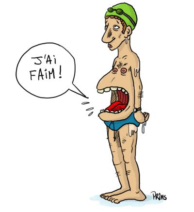

La gastronomie, un savoir-faire inégalé qui se transmet de génération en génération, c'est une manière d'apprécier le potentiel du paysage culinaire que possède
la région Auvergne-Rhône-Alpes.
La fondue savoyarde est un plat régional de la gastronomie savoyarde à base de fromage fondu et de pain. Elle est préparée à partir de produits locaux, tels que
le Comté, le Beaufort, le gruyère de Savoie ou l'emmental de Savoie.
La Raclette des Alpes est un plat typique et un incontournable de votre séjour au ski dans la station de Chamonix par exemple. C’est un moment convivial qui vous
attend à partager en famille ou entre amis et qui réchauffera votre corps et votre cœur.
Le Jésus de Lyon mis sous un filet qui lui donne son empreinte spécifique et une forme particulière de poire. il fait l’objet d’une phase de maturation et
d’affinage particulièrement importante pour la qualité gustative du produit fini. Il est ainsi une charcuterie phare de la cuisine Lyonnaise, internationalement
apprécié.
Qui n’a jamais entendu parler du Nougat de Montélimar, cette délicieuse friandise qui a fait la renommée de la ville… ? Lors de votre séjour, ne manquez pas de
visiter une nougaterie, et de découvrir la recette de cette gourmandise provençale, composée de sucre, de miel de lavande, de blanc d’œuf, de vanille, d’amandes et
de pistaches. Vous pourrez également vous procurer du nougat sur les étales de nos marchés provençaux.
